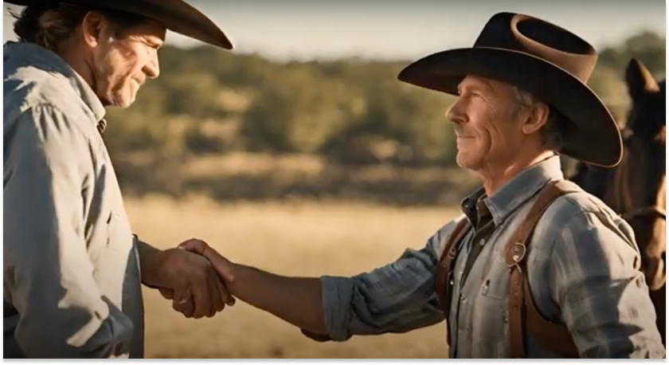
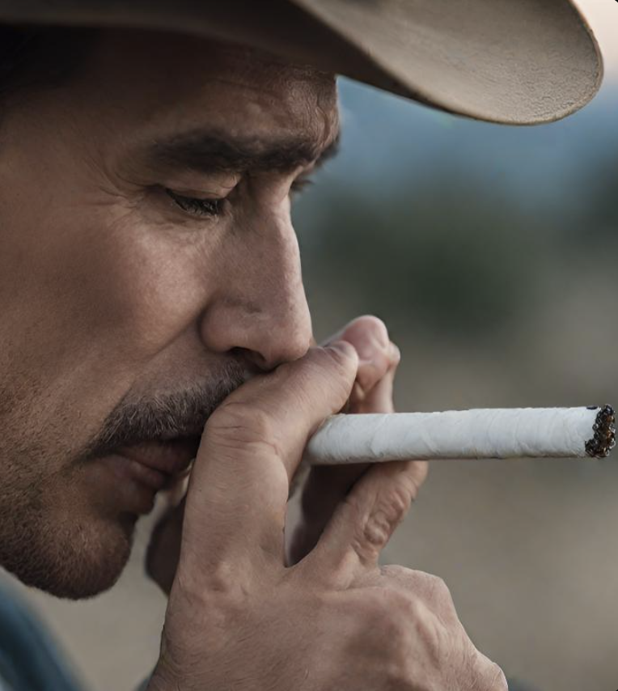

Lonesome Cowpoke

THIS LIFE AINT EASY
They never said being a cowboy would be easy. Hell, it's not like you get to pick anyway. You're born into it, surrounded by wide-open spaces and the vast expanse of the untamed West. It's a life carved out by grit and saddle leather, where the sunsets paint the sky in hues of orange and pink, but the days are filled with hard work and the constant dance with the land.
I'm just a cowpoke
.jpg)
Out here, every sunrise is a promise, and every sunset, a reflection on the day's toil. It's a rugged existence, one that demands respect for the land and the creatures that roam it. As the dust settles on the prairie, so too does the reality of a cowboy's life. It's not for the faint-hearted, that's for damn sure.
The sun rises and sets with me....
You wake up with the sun, the chill of the morning air biting into your bones. The aroma of strong, black coffee wafts through the air, a ritual as old as the hills. There's a comfort in the routine, in knowing that while the world may be changing, the life of a cowboy remains steadfast, like the towering peaks of the Rockies.
Brotherhood forever...
The saddle becomes an extension of your body, and the rhythmic creaking of leather is the soundtrack to your days. You guide your horse through the rugged terrain, navigating the challenges that nature throws your way. It's a partnership, built on trust and understanding, where words are unnecessary, and the connection is forged through silent nods and the gentle pat on the flank.
JUST A LONESOME COWPOKE
So, yeah, they never said being a cowboy would be easy. But easy ain't the point. It's about resilience, grit, and the unyielding spirit that defines the American cowboy. You ride into the sunset not because it's the end, but because there's always another sunrise on the horizon, and the land, with all its challenges, awaits the next chapter in this never-ending tale of the Wild West.